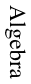
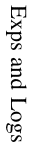

| Area | Date | Section | Topic | Homework |
|---|---|---|---|---|
|  | 8/25 | R1 | Simplifying | 7-11, 23, 29-35, 39-45, 51-63 |
| 27 | R2 | Factoring | 1-5, 13-23, 45-55, 71-75, 81-87 | |
| 29 | R3 | Rational Expressions | 9-29, 39-53, 61-69 | |
| 9/3 | R4 | Exponents | 1-23, 31-43, 53, 59 | |
| 5 | R5 | Radicals | 1-7, 17, 25, 37, 43, 47, 53, 57, 65, 75 | |
| 8 | Gateway Quiz #1 | |||
| 10 | 1.2 | Functions and Graphs | 3, 5, 23-33, 43-51, 55-61, 65-77 | |
| 12 | 2.1 | Properties and Examples | 1, 5, 9-25, 49, 55, 61-71 | |
| 15 | 2.2/2.3 | Graphical Transformations | (2) 1-25, 31-55, 61 (3) 1-7, 15-55, 61-65, 79 | |
| 17 | 2.6 | Composing Functions | 7, 9, 17, 19, 21-27de, 45-51, 57-65, 71-81 | |
| 19 | 5.1 | Inverse Functions | 1-23, 27-41, 55-65, 73-85, 93-101 | |
| 22 | Review | (R1) 1-31, 35, 39-59, 83, 85, 91-95 (R5) 1-9 | ||
| 24 | Test #1 | |||
| 26 | 1.3/1.4 | Linear Functions | (1.3) 5-33, 39-67 (1.4) 5-17, 23-29, 41-49 | |
| 29 | 1.5 | Linear Equations | 1-5, 11-15, 21-47, 61-73, 83-97 | |
| 10/1 | 7.1 | Systems of Equations | 7-25, 29-47 | |
| 3 | 3.2 | Quadratic Functions | 1-7, 17, 21-33, 39-43 | |
| 8 | 3.3 | Quadratic Equations | 15, 21, 25-37, 41, 47-51, 55, 67-73, 77-83, 91-99a, 101-111, 115 | |
| 10 | 3.8 | Polynomial Equations | worksheet #1 | |
| 13 | 4.3/4.5 | Fractional & Root Equations | (3) 11-21a, 37-53 (5) 11-21a, 29-43 | |
| 17 | Gateway Quiz #2 | |||
| 20 | 1.3/1.4/1.6 | Linear Applications | (1.3) 79-83 (1.4) 63-75 (1.6) 1-27, 33-55, 59 | |
| 22 | 1.6 | More Applications | worksheet #2 | |
| 24 | 7.1 | Applications of Systems | worksheet #3 | |
| 27 | 3.4 | Quadratic Applications | 1-17, 23 | |
| 29 | 3.4 | More Applications | worksheet #4 | |
| 31 | Review | (R1) 5-17, 21-47, 53-59 (R3) 7, 11, 13, 21-27, 77-81 (R7) 17-27, 41, 43, 59-65, 71-83 | ||
| 11/3 | Test #2 | |||
|  | 5 | 5.2 | Exponential Functions | 13-17, 25-59, 71, 75, 87 |
| 7 | 5.3 | Logarithm Properties | 1-45, 53, 69-95 | |
| 10 | 5.4 | Logarithm Functions | 1-15, 25, 31-39, 43-49, 57, 59, 63, 65 | |
| 12 | 5.5 | Exp Equations | 1, 5-27, 61-65, 69, 77 | |
| 14 | Gateway Quiz #3 | |||
| 17 | 5.5 | Log Equations | 3, 29-51, 59, 67, 79, 83, 85 | |
| 19 | 5.6 | Science Applications | 1-15, 39, 41, 53 | |
| 21 | 5.6 | Finance Applications | 17, 21-31, 47-51 | |
| 24 | Review | (R5) 11-23, 25a, 29, 33-45, 49-55, 57a, 59a, 61-73, 77, 79, 83, 85 | ||
| 12/1 | Test #3 | |||
| 3 | Review for Final | |||
| 7 | 1:00pm | Final Exam |